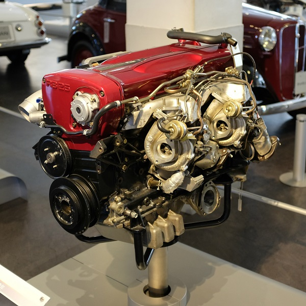
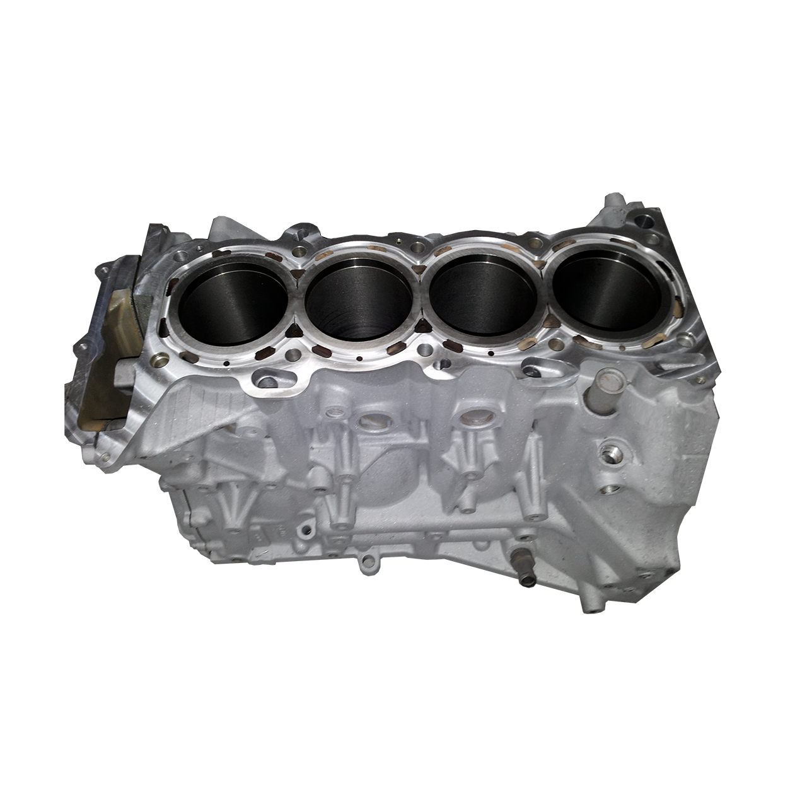

Introduction

Inline-6 turbo engine on display
An engine or a motor is a type of machine that's made to convert one form of energy into mechanical energy. Interal combustion engines (which is a type of heat engine) burns fuel to create heat which is then used to turn the wheels.
Why is it called an internal combustion engine? It's because mixtures of air and petrol that enters the engine's cylinder gets ignited by a spark-plug which causes it to burn rapidly, therefore making the air inside expand pushing the pistons down and creating power.
To withstand its heavy workload, the engine needs a robust structure. It's made out of two basic parts: the lower, heavier section which is the cylinder block, a casing for the engine's main moving parts; then the detachable upper cover which is the cylinder head.
The cylinder head contains valve-controlled passages where the air-fuel mixture enters the cylinder from and another passage where the exhaust gasses exits the cylinder
The block houses the crankshaft, which converts the reciprocating motion of the pistons into rotary motion at the crankshaft. Often the block also houses the camshaft , which operates mechanisms that open and close the valves in the cylinder head. Sometimes the camshaft is in the head or mounted above it.
Engine layouts

Inline 4 - SR20 block
The most simple and common type of engine uses 4 vertical cylinders close together in a row. This is known as an in-line engine or straight engine.
Some cars uses the more compact V-engine (also called the 'Vee' engine), especially those that have 8 cylinders or more. It's called a V-engine because the cylinders are arranged opposite to each other at angle (usually no more than 90 degrees).
Some other engines have horizontally-opposed cylinders, which are usually called flat engines. They're V8 engines with 180 degrees of cylinder bank. It's advantages are less height since the cylinders are flat and it's more balanced in certain aspects.
The cylinders and the mountings of an engine for things such as the oil filter and fuel pump are cast into the block. An oil reservoir, called the sump (or more commonly referred to as oil pan) is bolted underneath the crankcase.
How Power is created
The process of converting fuel into power in an engine starts when petrol is mixed with air in a device called a carburettor, forming a highly combustible mixture.

Suck
In the first part of the cycle, the piston moves away from the TDC (Top Dead Center). The intake valve is fully open to draw in the air-fuel mixture while the exhaust valve is fully shut.

Squeeze
As the piston rises from the BDC (Bottom Dead Center), the intake valve closes and the air-fuel mixture inside the cylinder gets compressed by the piston.

Bang
The explosion created from the compressed mixture then pushes the piston down, creating power. Both the intake and exhaust valves are closed.

Blow
Finally, the exhaust valves opens and the burnt gas from the explosion exits the cylinder into the exhaust.
The mixture is then drawn into the cylinders though a set of intake valves. In the cylinder, the mixture is compressed to around an 1/8 or 1/9 of it's original volume by the piston before being ignited by a spark plug. The rapid expansion of the gas pushes the piston down the cylinder. The downwards movement of the piston then rotates the crankshaft via a conrod (short for connecting rod). The downwards movement of the piston is known as the power stroke in a four-stroke engine. It happens once in every four strokes of the piston's movements.
The four-stroke cycle starts with the induction phase. When the exhaust valves are closed, the piston moves downwards which sucks the air-fuel mixture from the carburettor into the cylinder. The mixture enters the cylinder via an intake valve, which is opened by the camshaft.
After that, the intake valve closes while the piston moves upwards which compresses the mixture inside the cylinder. When the piston is about to reach the TDC, a sparkplug ignites the compressed mixture which causes it to explode inside the combustion chamber. The rapidly expanding air from the combustion chamber pushes the piston down.
Lastly, the piston moves upwards once more and the exhaust valves open to let out burn gasses from inside the cylinder. The camshaft keeps rotating, the exhaust valve closes, the intake valve opens, and the four-stroke cycle starts again.